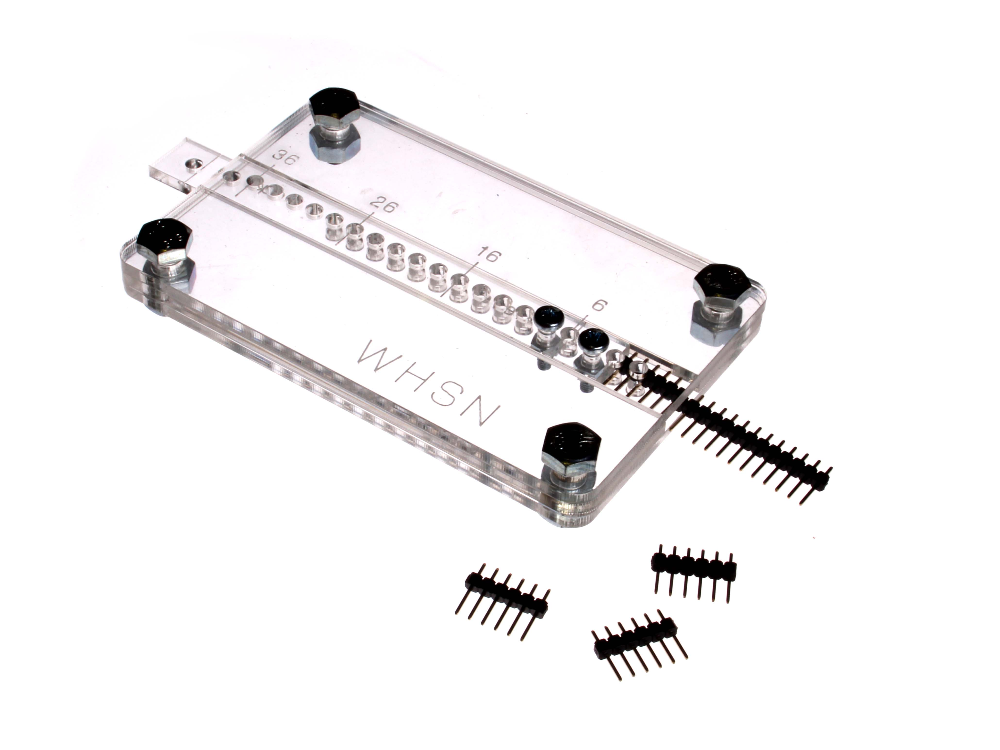
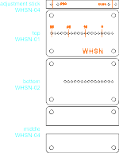

<h1>WHSN</h1>
<br>

<b>Header Snapper Tool</b>
<br>
It's easiest to buy headers in snappable lengths of 36 pins, however we often need other lengths. We made a little tool to help us out. 
(for more details and how to build your own <a href="http://oomlout.co.uk/blog/WHSN">;http://oomlout.co.uk/blog/WHSN</a> )
<br>
<br>
<br>

